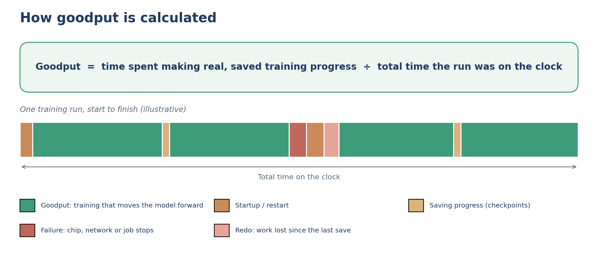
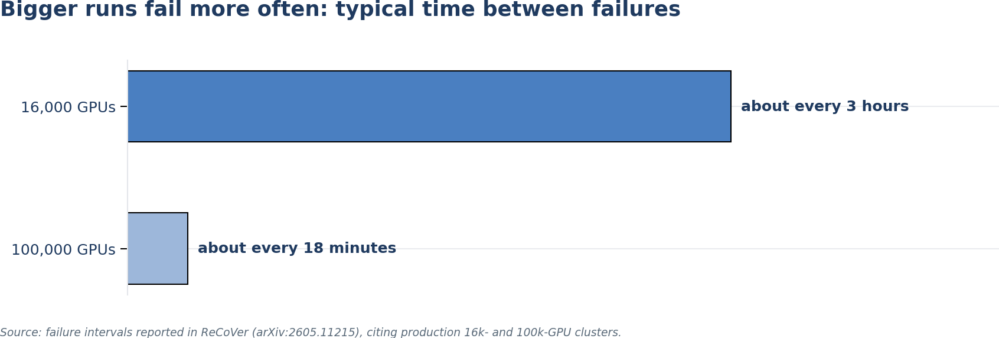
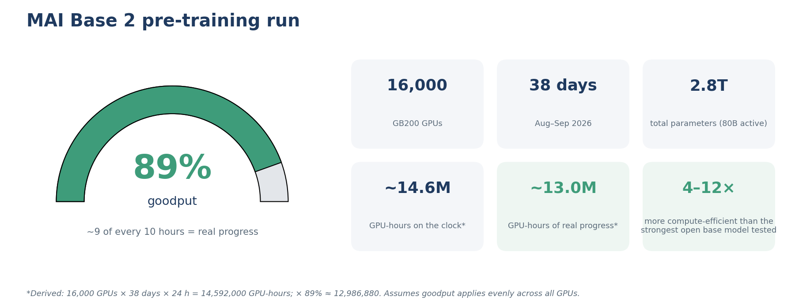

How the metric works, how it is calculated, and how the top AI labs compare
In one line: Test scores show what a finished model can do; goodput shows how well a lab can build one. Among the top AI labs, MAI is the one that has published this number for a frontier run: 89% across 16,000 GPUs.
1. What goodput measures
Training a frontier model means running thousands of chips together for weeks. Chips fail, connections drop and jobs stall, so not every hour on the clock actually trains the model. Goodput is the share of time that does. Google defines it as the proportion of time spent making productive, preserved training progress; the rest, called badput, is time lost to startup, stalls and recovery.

2. How it is calculated
Goodput = productive training time ÷ total elapsed time
Everything that is not productive training counts against the score:
| Time sink (badput) | What happens | How strong labs reduce it |
|---|---|---|
| Startup / restart | Loading the model, connecting thousands of chips, warming up | Faster job launch and model loading |
| Saving progress | Pausing to write checkpoints to storage | Faster, overlapped checkpoint saves |
| Failures and hangs | A chip, network link or process stops the job | Automatic detection, swap-out and recovery |
| Redone work | Progress since the last save is lost and must be repeated | Frequent saves; recovery without full restarts |
| Slow steps | Some steps run slower than normal (stragglers) | Monitoring and removing slow nodes |
Why scale makes this hard: the bigger the run, the more often something breaks. Industry data puts failures at roughly every 3 hours on a 16,000-GPU cluster and every 18 minutes at 100,000 GPUs, so keeping goodput high is a real engineering achievement.

3. MAI’s result: 89% goodput on a 16,000-GPU frontier run
MAI pre-trained MAI Base 2, a 2.8-trillion-parameter mixture-of-experts model, on 16,000 GB200 GPUs over 38 days in August and September 2026. Across the run, 89% of the time went into real training progress.

- Worked example: 16,000 GPUs × 38 days × 24 hours ≈ 14.6M GPU-hours on the clock. At 89% goodput, about 13.0M GPU-hours went into real progress.
- Why it paid off: MAI Base 2 is 4–12× more pre-training compute-efficient than the strongest open base model MAI tested, and MAI put those savings into training a larger model.
- After pre-training: MAI’s Rocket system runs reinforcement learning for weeks to months, and is built to recover and reconfigure components while the run continues instead of restarting the whole job.
4. How the top AI labs compare
Based on public sources as of November 26, 2026:
| Lab | Published goodput for a frontier run? | Published run details | What they have shared instead |
|---|---|---|---|
| MAI | Yes: 89% | 16,000 GB200 GPUs, 38 days, 2.8T-parameter MAI Base 2 | Run-level goodput plus RL fault-tolerance design (Rocket) |
| Google DeepMind | Not found | Not found for Gemini runs | Google defined the goodput metric, released a measurement library and a TPU fleet-efficiency study |
| OpenAI | Not found | Not found | Pre-training loss trend across 13 models since GPT-3.5 |
| Anthropic | Not found | Not found | No public training-run efficiency figures found |
What this means: Google created the yardstick, but MAI is the lab that has published a real frontier-run measurement with it. That makes MAI’s 89% the public reference point for training efficiency among the top labs.
5. Why it matters
- Lower cost: less wasted compute means cheaper models for customers.
- Faster progress: more useful hours mean better models sooner.
- Trust: a published number can be checked, compared and learned from.
Takeaway: Raw compute gets the headlines, but goodput decides how much of it turns into intelligence. MAI turned 89% of a 16,000-GPU frontier run into real progress, and is the top lab that has shown its work.
Sources
- Microsoft AI, Frontier Pre-training at Microsoft AI (Oct 15, 2026): microsoft.ai/news/frontier-pre-training-at-microsoft-ai
- Microsoft AI, RL infrastructure at Microsoft AI (Nov 23, 2026): microsoft.ai/news/rl-infrastructure-at-microsoft-ai
- Google Cloud, Monitor goodput with the ML Goodput Measurement library: docs.cloud.google.com/tpu/docs/goodput
- Google, Machine Learning Fleet Efficiency with ML Productivity Goodput (arXiv:2502.06982)
- METR, Interpreting a recent acceleration in pretraining loss (Nov 24, 2026), on OpenAI’s published loss data
- ReCoVer: Resilient LLM Pre-Training System (arXiv:2605.11215), failure intervals at 16k and 100k GPUs
Note: "Not found" means no public figure was found in our review; labs may track this metric internally. MAI figures are MAI-reported.